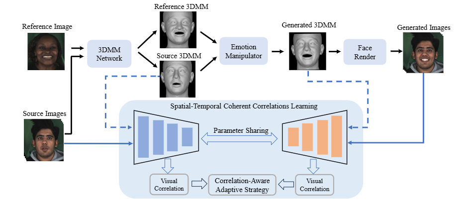

Speech-preserving facial expression manipulation (SPFEM) aims to modify facial emotions while meticulously maintaining the mouth animation associated with spoken content... (摘要内容) ... results demonstrate the effectiveness of the proposed STCCL algorithm.

Overall pipeline of incorporating STCCL into the advanced NED method.
The proposed STCCL is an architecture-agnostic supervisory module designed to enhance existing Speech-Preserving Facial Expression Manipulation (SPFEM) backbones. To demonstrate its effectiveness as a "plug-and-play" enhancement, we provide direct side-by-side comparisons below. Each video follows this 4-column layout:
Observe that STCCL effectively preserves fine-grained articulatory details (mouth shape) from the Source while maintaining the target emotional expressions, surpassing the original SOTA baselines.